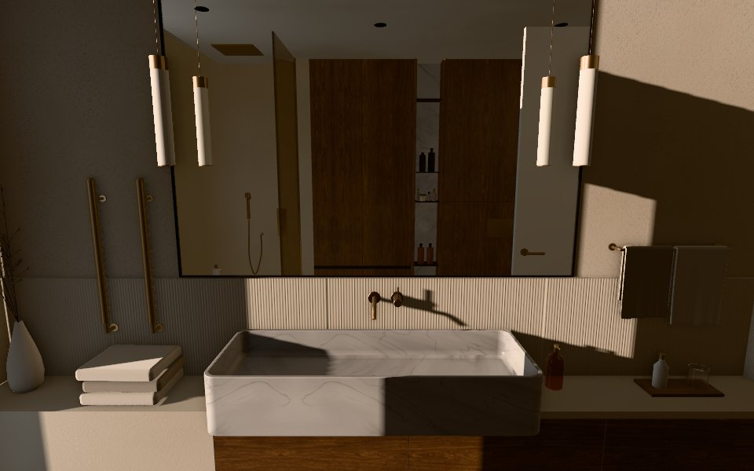
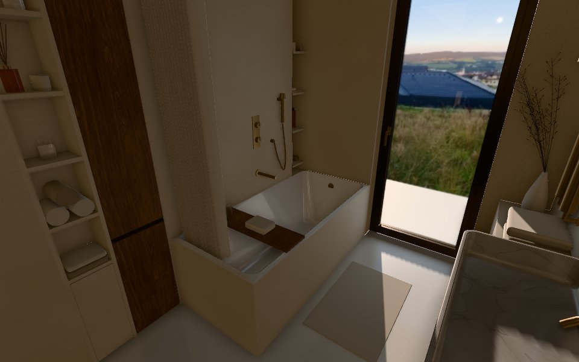
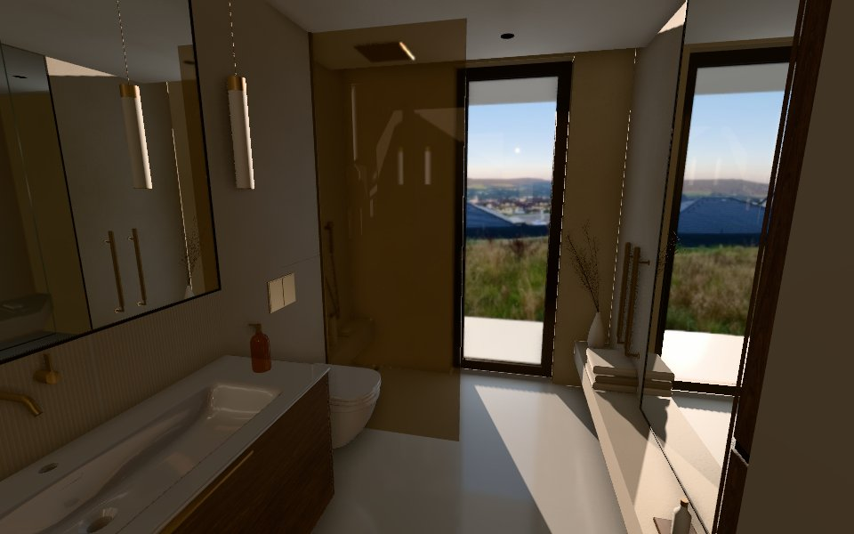
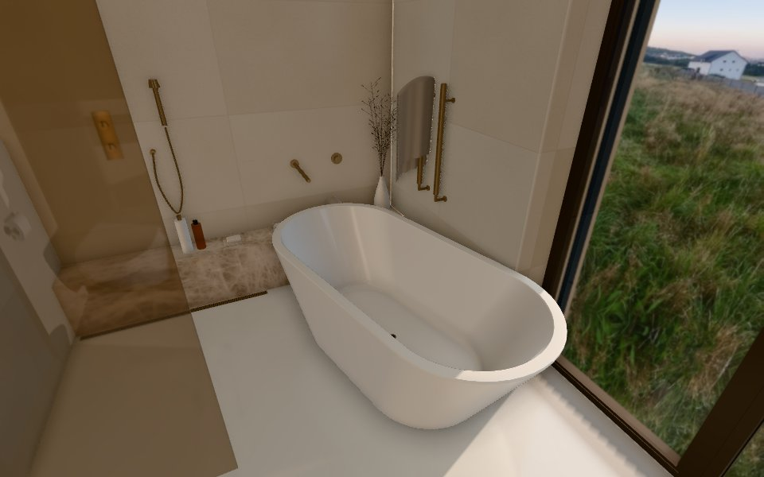
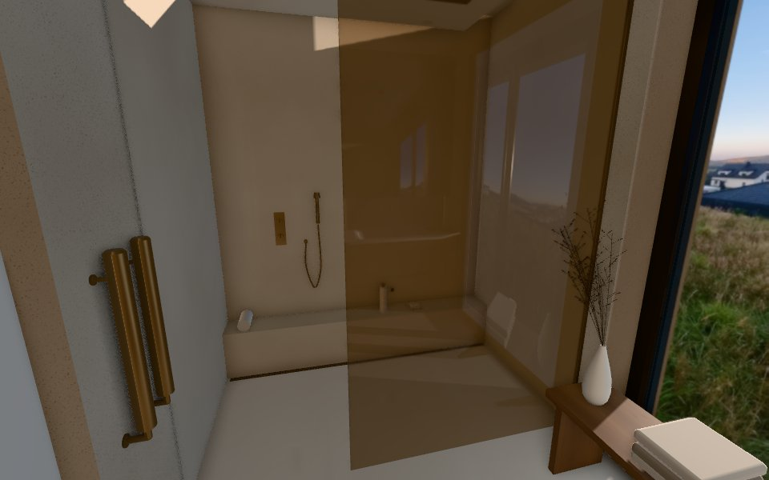
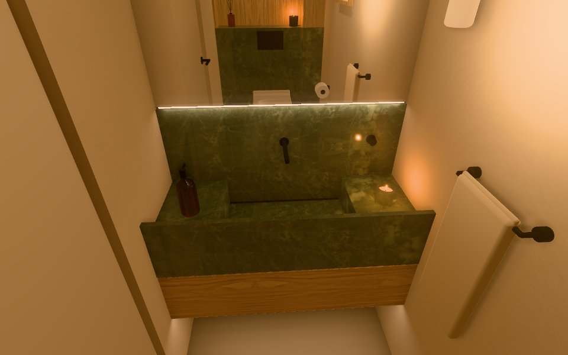
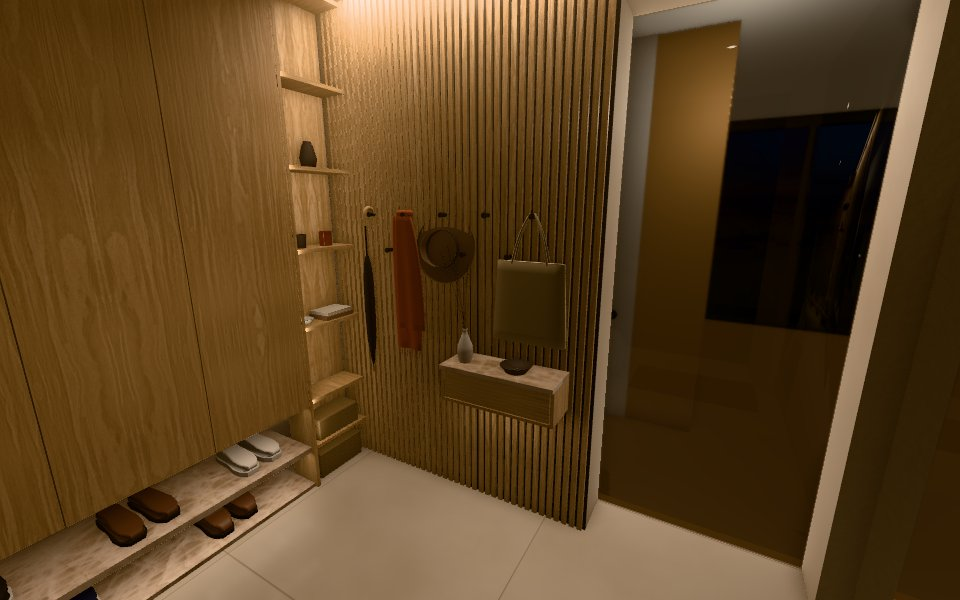
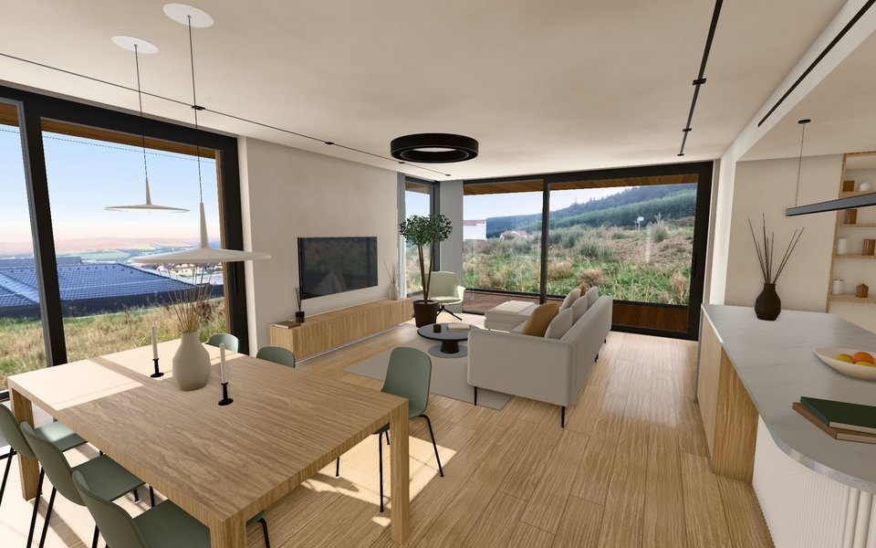

Dům Pt · Interiors
Interactive 3D views of the bathroom, entrance and kitchen & living room designs. Each opens in your browser, with styles or stone schemes, light moods and the open / close options in its panel.

Lower bathroom
The original layout, with five vanity versions to switch between and flip.
Open 3D view →
Lower bathroom with a bath
The original layout with a built-in bath and a linen shower curtain in place of the walk-in shower; the tall walnut cabinet shrinks to one towel door over one hamper. Goes with the master bathroom with only a shower.
Open 3D view →
Lower bathroom, fixtures on one wall
Vanity, WC and shower on one wall; two versions of the cabinet wall opposite.
Open 3D view →
Master bathroom
Bath and walk-in shower, in two layouts: a built-in bath along a fluted tiled wall or a freestanding bath by the window. Pick the wall tiles, the floor, the stone of the shower bench and the wood of the cabinets.
Open 3D view →
Master bathroom, shower only
No bath: a walk-in shower across the whole room behind a glass panel, with the stone ledge as its bench, and a walnut bench under the window. Goes with the lower bathroom with a bath.
Open 3D view →
Powder room
A windowless WC with an antoniolupi Street basin, in four styles (Noir, Cosy, Jewel, Japandi), with nine stones, wall paints, six woods and three floors (epoxy, wood, tiles) to try, three ceilings (high, low, or low with a lit recess over the basin), five mirrors (full wall, slim, round, capsule, arch) on a backdrop of paint, stone or wood, the WC pre-wall in stone, glazed tiles or wood, three versions of the cabinet over the WC and three light moods.
Open 3D view →
Entrance
The entrance hall with its full-wall mirror, a hook wall with a floating key shelf, and a floating wardrobe over an open stone shoe rack with open shelving beside it that carries on as a cushioned bench, in the powder room's four styles (Noir, Cosy, Jewel, Japandi), with woods, wall paints, wardrobe doors (wood, fluted or painted), the hook wall in slats, fluted wood, wood, stone or paint, nine stones and 120 × 120 cm floor tiles in any colour and five structures to try, and four light moods, with the evening sun through the front door's glass and the living room's daylight behind the glass door.
Open 3D view →
Kitchen & living
The open-plan kitchen, dining and living room: the kitchen run under the window strip, looking out on a garden of clipped hedges and multi-stem trees, with its tall units, a stone island with a waterfall end and fluted panel under a linear pendant, the dining table under two Vibia Skan pendants by a mirrored niche with a floating sideboard, an IKEA ÄPPLARYD sofa facing the TV wall, a lounge chair by the corner glazing (or living and dining swapped), in the four styles (Noir, Cosy, Jewel, Japandi), with woods, kitchen fronts (wood, fluted or painted), the window strip (with a tilt-and-turn sash or all fixed), nine stones, wall paints, two sofa covers and floors (planks or herringbone, in any colour) to try, four light moods with the sun through the day, linen curtains in a lit ceiling recess to draw, and the two terrace doors, the glass door to the hall and every kitchen drawer to open, and a fireplace to add.
Open 3D view →